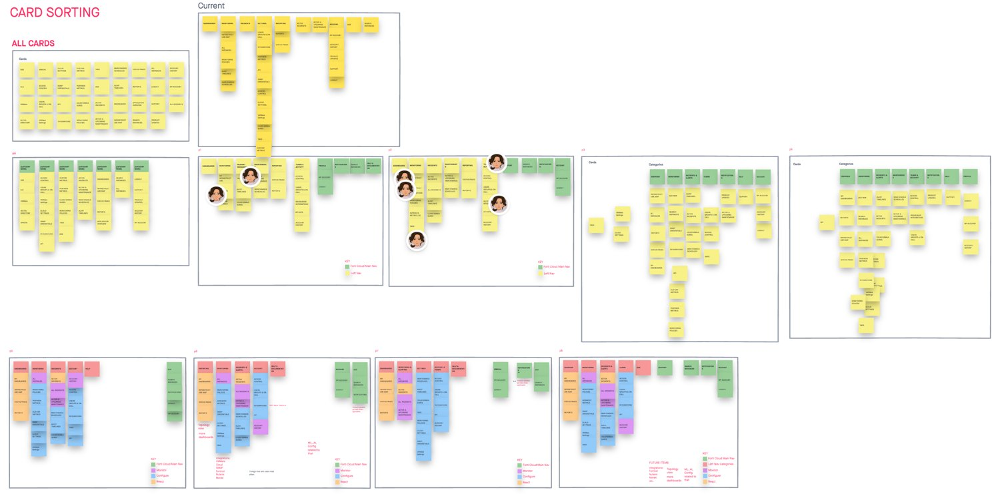

04 How I grounded the redesign
Navigation decisions came from user behavior, not internal bias.
To learn how the product was actually used — and where the roadmap was headed — I immersed myself in both the organizational and the customer perspective before touching structure.
01
Listening tours. Met with engineering, product, sales, and customer success to surface pain points and expectations — and studied adjacent Fortinet and competitor products for patterns.
02
Customer interviews. Talked with existing customers to uncover what worked in Panopta and where they struggled — findability and transient navigation came up again and again.
03
Card sorting. Ran open and closed sorts with ~20 customers and cross-functional participants, then analyzed the similarity matrix for consistent groupings.
04
Tree testing. Validated task findability in the proposed structure — confirming key improvements and flagging areas to adjust.
05
Usability testing & analytics. Watched users complete tasks on top pages, and read heatmaps and click paths to see how people actually moved through the product.
What research consistently returned: users struggled with findability — long menus and cluttered pages made navigation frustrating — and transient navigation left them unsure where they were or where they could go next. That, plus the ambiguity of early post-acquisition ownership, is what the IA had to solve.

Research board — inspiration & competitive audit, card sorting, and tree testing (click to zoom in and read)

Closed card sort — how participants grouped the navigation cards (click to zoom in and read)